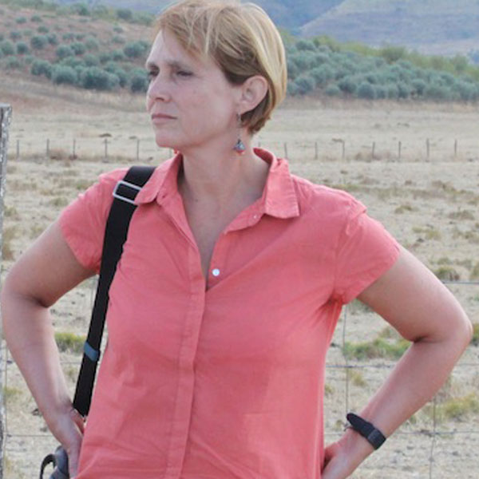
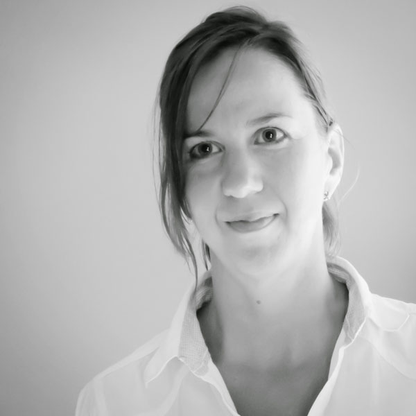
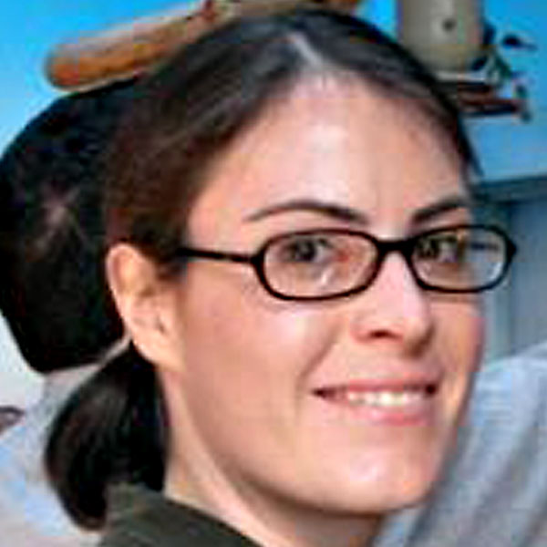
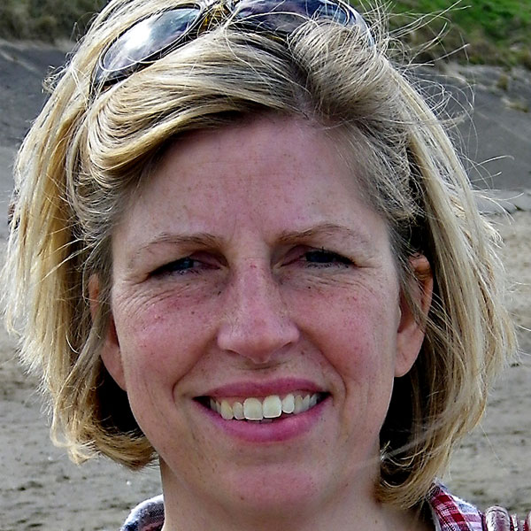
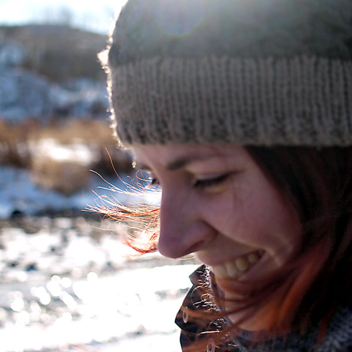
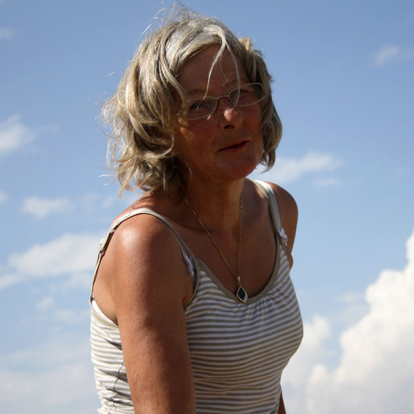
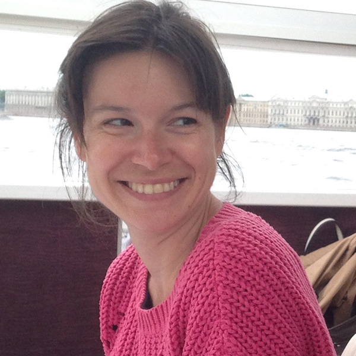
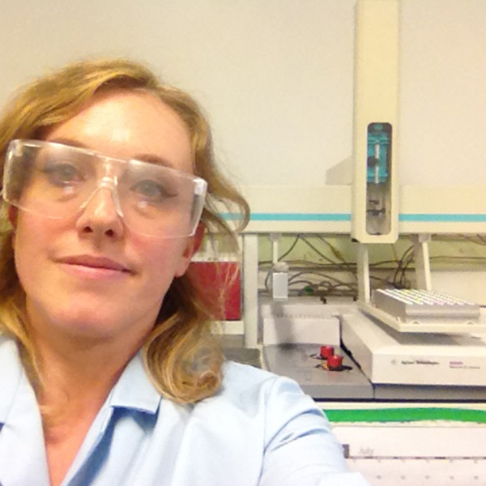
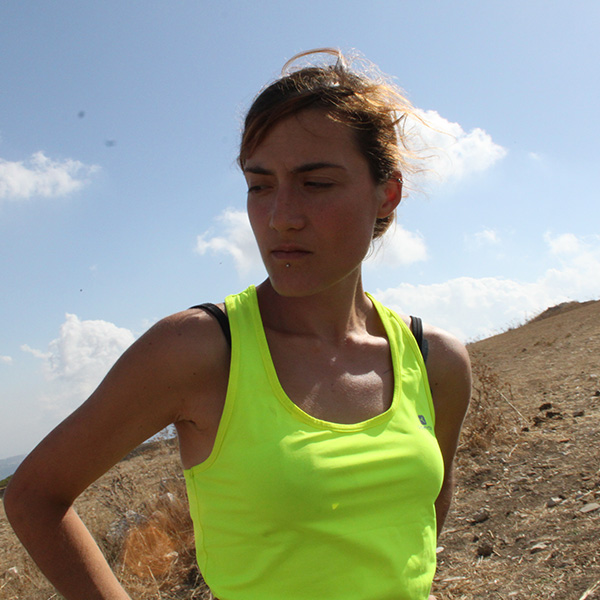
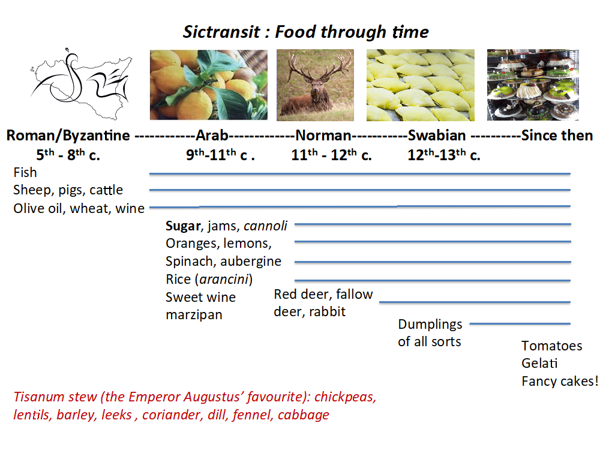

A five-year Research Project by the Universities of York, Rome Tor Vergata and Salento
Cessate d'uccidere i morti,
Non gridate più, non gridate
Se li volete ancora udire,
Se sperate di non perire.
Hanno l'impercettibile sussurro,
Non fanno più rumore
Del crescere dell'erba,
Lieta dove non passa l'uomo.
—Giuseppe Ungaretti (1888-1970)
About the project
The Project
The Departments of Archaeology at York and Rome 2 (Tor Vergata) began a joint research project in 2014 investigating the Byzantine-Arabic-Norman- Swabian transition (sixth to thirteenth centuries AD) in Sicily, with special focus on changes in social structure, agriculture and trade. Assemblages from previous excavations, Survey in four parts of the island and new investigations at Castronovo di Sicilia provide our data.
The project is directed by Alessandra Molinari (Rome) and Martin Carver (York) with the collaboration of Girolamo Fiorentino (Salento) and the support of Stefano Vassallo of the Soprintendenza per i Beni Culturali e Ambientali di Palermo.
We are grateful to the Mayor, Commune and people of Castronovo for their warm and valued support.
The title of the Project is The archaeology of Regime Change: Sicily in Transition abbreviated to the acronym SICTRANSIT. The ERC action number is 693600.
Aims
The project's purpose is to explore the changes of demography, agricultural production and trade of Sicily through five successive regimes.
These are:
Byzantine—Greek speaking Christian imperial power based at Constantinople (Byzantium, now Istanbul), active in Sicily 6-8th century with a headquarters at Syracuse Aghlabid—Arabic speaking Islamic North African power of the Abbasid (Sunni) confederation based at Baghdad in Iraq, gaining control of Sicily in the 9th century and making its headquarters at Palermo
Kalbid—Arabic speaking Islamic North African Fatimid (Shi'ite) power based at Cairo in Egypt, exercising control over Sicily in the 10-11th century from a principal base at Palermo.
Norman—Latin/French speaking Christian power from Northern Europe exercising control over Sicily and southern Italy 11th to 12th century from a capital at Palermo (Roger II).
Swabian—Latin/German speaking Christian power from Germany exercising control over Sicily and much of Italy in 12th-13th century with its Sicilian base at Palermo (Frederick Barbarossa, Frederick II).
Investigations at Castronovo di Sicilia, focussing on the sites of Monte Kassar (7/8th century Byzantine stronghold), Colle San Vitale (possible 9-11th century Arab then Norman citadel), Casale San Pietro (Byzantine then Arab agricultural centre), Castronovo town (Arab, Norman, Swabian and extant town.
Figure 1: Our sources. 1. Agrigento (5th-7th) 2. Castronovo, Monte Kassar (7th-9th), San Vitale (9th-11th) 3. Castronovo, San Pietro (6th-13th) 4. Catania, Chiesa di Sant'Agata (8th) 5. Contrada Colmitella (7th-13th) 6. Contrada Sant'Agata (5th-6th) 7. Entella (11th-13th) 8. Mazara del Vallo (10th-14th) 9. Palermo, Castello San Pietro (9th-10th) 10. Monte Maranfusa (12th-13th) 11. Palermo Town (9th-13th) 12. Piazza Armerina (10th-12th) Rocchicela de Mineo (9th) Segesta/Calatabarbaro (12th-13th) 15. Segesta (13th) San Vito Lo Capo (12th-13th) 17. Sofiana (7th-9th)
The method is to investigate the experience of the people on the ground using settlement forms and patterns, pottery, animal bone, human bone and paleoecology.
The line of argument (FIG 2) is that data collected from our sources (coins, seals, pottery, plant remains, faunal remains and human remains from cemeteries and settlements) will be analysed using scientific procedures (thin section, organic residues, stable isotopes, aDNA) to reveal the character of peoples, farming, diet, industry and trade and the way these changed between the sixth and thirteenth centuries.
Figure 2: Overall structure of research
Samples to be analysed are as follows:
ceramics and other artefacts at Rome (Tor Vergata)
human bone, animal bone and organic residues at York (Bioarch)
botanical remains at Salento (Lecce)
Timetable
Our timetable is shown in Fig 3.
Two seasons of Evaluation were carried out in 2014, and 2015 and the Project was designed in 2014-2015. The implementation stage of the project begins on 1 Aug 2016 and will run for five years. The fieldwork season is (currently) the month of September in years 1-4.
Figure 3: Timetable
The team
The team is deployed as follows:
At York: Martin Carver (PI), Ol Craig (Organic residue analysis and co-ordination), Jane Thomas-Oates (organic residue analysis), Michelle Alexander (stable isotope analysis), Camilla Speller (aDNA analysis), Veronica Aniceti (animal remains), Malin Holst (human remains), Helen Goodchild (geophysics), Neil Gevaux (digital media), Madeleine Hummler (publication).
At Rome: Alessandra Molinari (Co-director of Research, ceramics), Vivien Prigent (coins and seals), Emanuele Vaccaro (survey), Paola Orrechioni (sample management), Claudio Mangiaracina (ceramics). At Lecce: Girolamo Fiorentino (palaoecology), Milena Primavera (plant remains)For contacts see DIRECTORY below; other staff will be added when appointed.
We have an advisory panel who help to frame programmes and interpret results:
Stefano Vassalo (Soprintendenza dei Beni Culturali, Palermo), Lucia Arcifa (Professor of Archaeology at Catania), Annliese Nef, Université de Paris I, Panthéon-Sorbonne, Chris Wickham (Professor of History, University of Oxford), Eduardo Manzano (Centro de Ciencas Humanas y Sociales, Madrid), Giuseppe Barbera (University of Palermo).
Administration. Each University (York, Rome TV, Salento) has a separate contract with ERC. The co-ordinating manager is Jo Tozer (York).
CONTACTS
PI:
Rome:
Rome:
Bioarchaeology—York:
Bioarchaeology—York:
Lecce:
Website:
Advisors
Lucia Arcifa
(Catania)
Guiseppe Barbera
(Palermo)
Eduardo Manzano
(Madrid)
Annliese Nef
(Paris)
Stefano Vassallo
(Palermo)
Chris Wickham
(Oxford)
Directors
Martin Carver (York)
PI

Alessandra Molinari (Rome)
Co-director
Adminsitrative Support

Jo Tozer
Co-ordinating manager
York
Ol Craig (BioArCh)
Organic residue analysis
Michelle Alexander (BioArCh)
Stable isotope analysis

Camilla Speller (BioArCh)
aDNA analysis
Jane Thomas-Oates
Analytical Chemistry

Malin Holst
Human remains
Veronica Aniceti
Animal Bone

Helen Goodchild
Geophysics

Madeleine Hummler
Editor
Jasmine Lundy
(ORA)

Léa Drieu
(ORA)
Aurore Monnereau

Alice Ughi
(Stable Isotopes)
Rome
Vivien Prigent
Coins and seals
Paola Orrechioni
Records

Francesca Colangeli
Glass and Metal
Antonino Meo
Ceramics
Salento
Girolamo Fiorentino
Palaeoecology
Milena Primavera
Plant Remains
Public Engagement
In addition to 22 public lectures given by the PI and co-director (see below), a public event was held on 16 June 2018 which formed part of the University of York's "Festival of Ideas". It was called A Taste of Ancient Sicily, and its theme was food as a source of history.
The display occupied a quadrangle in King's Manor which was full of families from 10am until 2pm. The BioArch scientists entertained members of the public in a "Science Room" where they showed how their research was discovering what food was eaten in Sicily between the 5th and 13th century and the preferences of different cultures.

It is planned to mount similar events during the next season at Castronovo for school children and to accompany the end-of-dig presentation to the citizens.
Visitors were given a pre-identified character and invited to use the results of analyses to find out who they were. There was an exhibition by our artist-in residence, a specially made film and a ticketed lecture in marquee attended by 170.
2015 Molinari, Alessandra. "Islamisation" and the Rural World: Sicily and al-Andalus. What kind of archaeology? in Sauro Gelichi and Richard Hodges (eds)
New Directions in Early Medieval European Archaeology: Spain and Italy compared. Essays for Riccardo Francovich (Brepols), 187-220.
2016 Molinari, Alessandra. Fortified and Unfortified Settlements in Byzantine and Islamic Sicily: 6th to 11th centuries.
In Neil Christie and Hajnalka Herold (eds) Fortified Settlements in Early Medieval Europe. Defended Communities of the 8th to 10th century
(Oxford: Oxbow), 320-332.
2016 Carver, Martin and Molinari, Alessandra. Sicily in Transition Research Project. Investigations at Castrononovo di Sicilia. Results and Prospects, 2015 FASTI ONLINEhttp://www.fastionline.org/docs/FOLDER-it-2016-352.pdf
Check back to find links to press articles as they become available.
I want to participate
Sictransit welcomes interest from experienced and inexperienced volunteers willing to contribute hands-on participation in our field season. The work involves picking, shovelling, trowelling, survey, surface collection, pot washing and handling finds and a certificate of attendance is given.
The season takes place at Castronovo di Sicilia in September each year, and board (5 days a week) and lodging are provided. However the project is unable to meet the costs of your travel to and from Castronovo. The nearest airport is Palermo and the nearest train station is Cammerata/San Giovanni Gemini.
The 2018 season will run from 20 August to 30 September.
If you would like to participate please email , giving an outline of your interest and any previous experience and I'll put you on the waiting list. I'll make a selection from the list in February or March and notify you all.


")
")
")


{kind=link}
{kind=link}
{kind=link}
{kind=link}
{kind=link}
{kind=link}
{kind=link}
{kind=link}
{kind=link}
{kind=link}
{kind=link}
{kind=link}
{kind=link}